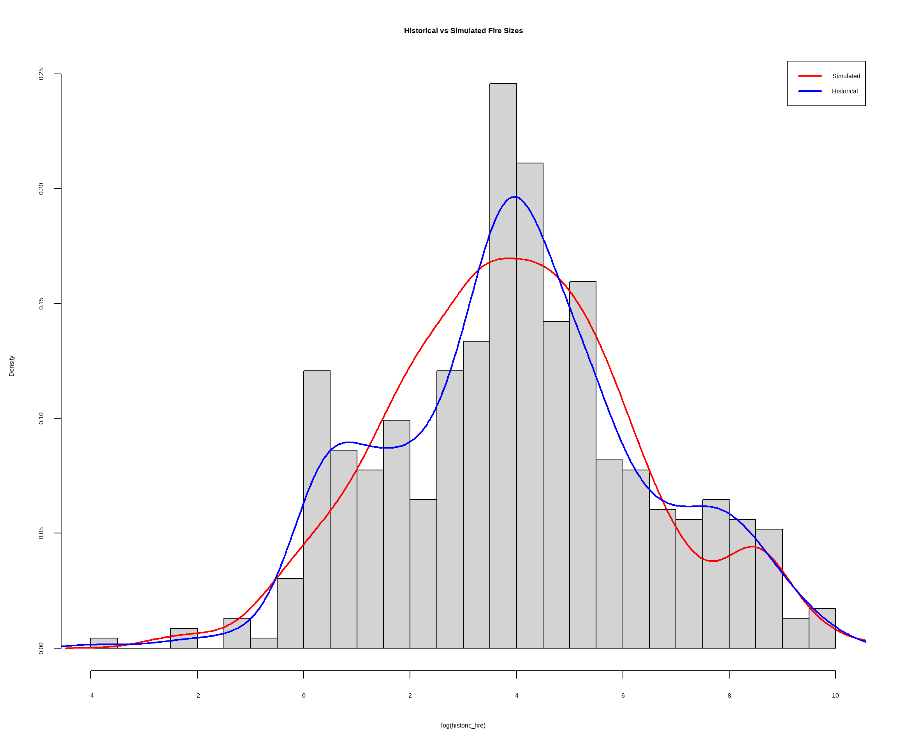
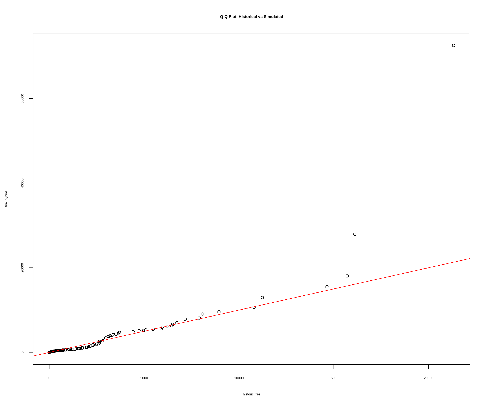

5 Monte Carlo Markov Chain
5.1 Introduction
A Monte Carlo Markov Chain (MCMC) algorithm is a computational method used to generate random samples from complex probability distributions that are difficult or impossible to sample from directly. It combines two key concepts: a Markov chain, in which the next state depends only on the current state, and Monte Carlo simulation, which uses repeated random sampling to estimate statistical properties. Rather than exploring every possible solution, MCMC constructs a sequence of candidate solutions that gradually converges to the target probability distribution, allowing quantities such as means, probabilities, or model parameters to be estimated from the generated samples.
MCMC is widely used in fields such as forestry, statistics, and machine learning to quantify uncertainty and make inferences from complex models. In forestry, for example, an MCMC algorithm could be used to estimate uncertain parameters such as growth rates, habitat suitability, and succession. Unlike deterministic optimization methods that seek a single best solution, MCMC produces a distribution of plausiblesolutions, providing both an estimate of the most likely outcome and a measure of the uncertainty associated with that estimate.
5.2 The Monte Carlo Markov Chain
The Monte Carlo Markov Chain (MCMC) script implements a Bayesian hybrid fire-size model that separates wildfire sizes into two components: ordinary fires and extreme fires. Candidate threshold values ranging from the 90th to the 99th percentile of the historical fire-size distribution were evaluated to identify the point at which extreme events should be modeled separately. Fire sizes below the threshold are treated as the bulk distribution and modeled using a Lognormal distribution , while fire sizes above the threshold are treated as the tail distribution and modeled using a Pareto distribution (A Lognormal distribution is a continuous probability distribution for positive-valued data in which the logarithm of the variable follows a normal distribution, resulting in a right-skewed shape with many small observations and fewer large ones. In wildfire modeling, the Lognormal distribution is often used to represent typical fire sizes because it can effectively capture the natural variability and positive skewness commonly observed in historical fire-size data)
A Pareto distribution is a probability distribution commonly used to model phenomena in which a large number of small events occur alongside a small number of extremely large events, resulting in a long, heavy right tail. In wildfire modeling, the Pareto distribution is well suited for representing extreme fire sizes because it allows for rare but potentially very large fires that can dominate total area burned and significantly influence risk assessments. A heavy tail refers to a probability distribution where extreme values occur more frequently than they would under “light-tailed” distributions like the normal distribution. In practical terms, it means that very large outcomes — such as extremely large forest fires — are rare, but not exponentially rare. Instead, their probabilities decline slowly as values increase. So even very large events still have a meaningful chance of occurring. Mathematically, heavy-tailed distributions assign more probability mass to the far right side of the distribution. For example, in a Pareto distribution, the probability of exceeding a value (x) follows a power law rather than an exponential decay, which makes extreme events much more likely than in lognormal or Weibull cases.In your fire modelling context, a heavy tail means the model expects **occasional very large fire patches (megafires) to occur more often than a “thin-tailed” model would suggest, which has major implications for risk planning and harvest optimisation.
For each threshold, a Metropolis-Hastings MCMC algorithm is used to estimate the posterior distributions of the Lognormal parameters (μ, and σ) and the Pareto tail parameter (α). Thousands of parameter proposals are generated and accepted or rejected according to their likelihood of reproducing the observed historical fire sizes, producing a posterior sample that reflects both parameter uncertainty and the observed variability in the data(A posterior distribution is a probability distribution that represents the updated uncertainty about a model parameter after combining prior assumptions with the observed data. In an MCMC analysis, the posterior distribution describes the range of plausible parameter values (such as μ, σ, and α) and their associated probabilities given the historical fire-size observations, rather than producing a single best estimate).
Once the posterior distributions have been estimated, the model generates simulated fire sizes using a posterior predictive simulation approach. The proportion of fires assigned to the bulk and tail components is determined in a preprocessing step from the historical data for the selected threshold rather than being fixed arbitrarily. For each simulated fire, the model first determines whether it belongs to the bulk or extreme-fire process and then samples parameter values from their posterior distributions before generating a fire size. This procedure produces a synthetic fire-size distribution that incorporates uncertainty in both model parameters and future fire occurrences. The threshold that yields the smallest Kolmogorov–Smirnov (KS) statistic between the historical and simulated fire-size distributions is selected as the optimal model, providing an objective means of identifying the best separation point between ordinary and extreme wildfire events while maximizing agreement with the observed fire-size distribution.
library(tidyr)
library(tidyverse)
library(terra)
library(sf)
library(fitdistrplus)
library(kSamples)
rm(list = ls())
set.seed(999)
gdb_path<-"C:\\Data\\STSM2024v3\\STSM2024\\Boundary\\tsa02\\R\\data\\tsa02_2024.gdb"
fires <- st_read(gdb_path,
layer = "hist_fires")
## Reading layer `hist_fires' from data source `C:\Data\STSM2024v3\STSM2024\Boundary\tsa02\R\data\tsa02_2024.gdb' using driver `OpenFileGDB'
## Simple feature collection with 464 features and 4 fields
## Geometry type: MULTIPOLYGON
## Dimension: XY
## Bounding box: xmin: 1488696 ymin: 466375.5 xmax: 1580836 ymax: 573570.4
## Projected CRS: NAD83 / BC Albers
fires<-fires%>%mutate(ha = as.numeric(st_area(Shape)* 0.0001))
historic_fire<-st_drop_geometry(fires)%>%
dplyr::select(ha)%>%
pull()
# ----------------------------------------------------------
# 1. DATA PREPARATION
# ----------------------------------------------------------
fire <- historic_fire # observed fire sizes
# Define threshold separating "normal" vs "extreme" fires
u <- quantile(fire, 0.95)
# Bulk (typical fires below threshold)
bulk <- fire[fire <= u]
# Tail (extreme fires above threshold)
tail <- fire[fire > u]
# Log-transform bulk for lognormal modelling
log_bulk <- log(bulk)
# ----------------------------------------------------------
# 2. MCMC SETTINGS
# ----------------------------------------------------------
n.iter <- 20000
# Storage vectors for posterior samples
mu <- numeric(n.iter) # lognormal mean (bulk process)
sigma <- numeric(n.iter) # lognormal sd (bulk process)
alpha <- numeric(n.iter) # Pareto tail index (extreme process)
# Initial values based on empirical data
mu[1] <- mean(log_bulk)
sigma[1] <- sd(log_bulk)
alpha[1] <- 2
# Proposal distribution widths (tuning parameters)
prop.mu <- 0.05
prop.sigma <- 0.05
prop.alpha <- 0.25.3 MCMC Sampling Loop (Joint Bulk and Tail Model)
The MCMC sampling loop uses a Metropolis–Hastings algorithm to estimate the posterior distributions of the parameters describing both the bulk and extreme portions of the fire-size distribution. At each iteration, new candidate values are proposed for the Lognormal parameters (μ, and σ) that describe typical fire sizes and for the Pareto shape parameter (α) that describes extreme fire sizes. The likelihood of the observed bulk fire data is calculated under both the current and proposed Lognormal parameter sets, while the likelihood of the extreme fire data is calculated under both the current and proposed Pareto parameter values. These likelihoods are combined to form a joint likelihood representing the fit of the complete hybrid model to the historical data. An acceptance probability is then calculated from the ratio of the proposed and current likelihoods. If a random draw is less than this probability, the proposed parameters are accepted and saved; otherwise, the previous parameter values are retained. Repeating this process thousands of times creates a Markov chain that gradually converges to the posterior distributions of the unknown model parameters, with parameter values that better explain the observed fire-size distribution being visited more frequently.
Once parameter estimation is complete, the script performs posterior predictive fire simulation to generate synthetic fire sizes. The first 5,000 MCMC iterations are discarded as burn-in to remove the influence of the initial parameter values, and the remaining samples are treated as draws from the posterior distributions of μ, σ, and α(burn-in refers to the initial portion of the Markov chain that is discarded because the parameter values are still strongly influenced by their starting values and may not yet represent the target posterior distribution. Removing these early iterations helps ensure that subsequent analyses and simulations are based on samples drawn from a stable and converged posterior distribution, thereby reducing bias in parameter estimates).
For each simulated fire, the model first determines whether the fire belongs to the bulk or extreme component of the distribution, assigning approximately 95% of fires to the Lognormal process and 5% to the Pareto tail process. When a bulk fire is selected, a random pair of Lognormal parameters is drawn from the posterior distributions and used to generate a fire size using the Lognormal distribution. When an extreme fire is selected, a Pareto shape parameter is drawn from its posterior distribution and used to generate a fire size above the threshold using the inverse-transform method. Repeating this process generates a synthetic fire-size dataset that reflects both the observed distribution of historical fire sizes and the uncertainty in the estimated model parameters, thereby providing a realistic representation of future wildfire-size variability.
5.3.1 Code Notes:
5.3.1.1 LogNormal Parameters
These two lines generate candidate parameter values for the next MCMC iteration by drawing random values from normal distributions centeredon the current parameter estimates. Specifically, mu.star proposes a new value for the Lognormal mean (μ), while sigma.star proposes a new value for the Lognormal standard deviation( σ); the abs() function ensures that the proposed standard deviation remains positive, since standard deviations cannot be negative.
5.3.1.2 Pareto parameter
A new candidate value for the Pareto shape parameter (α) is generated by sampling from a normal distribution centered on the current #parameter estimate, with the absolute value taken to ensure that the proposed shape parameter remains positive and therefore valid for a #Pareto distribution.
5.3.1.3 Compute log-likelihood for BULK (lognormal)
These statements calculate the log-likelihood of the observed bulk fire-size data under both the current and proposed Lognormal parameter values. By comparing logLik.bulk.old and logLik.bulk.new, the MCMC algorithm evaluates whether the proposed parameters provide a better fit to the observed data and should therefore be accepted or rejected in the next step of the Metropolis–Hastings procedure.
5.3.1.4 Compute log-likelihood for TAIL (Pareto)
These expressions calculate the log-likelihood of the observed extreme fire sizes (those exceeding the threshold u) under both the current #Pareto shape parameter and the newly proposed Pareto shape parameter. By comparing logLik.tail.old and logLik.tail.new, the MCMC algorithm #determines whether the proposed value of αprovides a better representation of the extreme-fire tail and should therefore be accepted into #the Markov chain.
5.3.1.5 Combine likelihoods (joint model)
The log-likelihoods for the bulk and tail components are combined to produce an overall measure of model fit for the current and proposed parameter sets, and the Metropolis–Hastings acceptance probability is then calculated from the difference between these values to determine the likelihood that the proposed parameters will be accepted into the Markov chain.
5.3.1.6 ACCEPT / REJECT PROPOSAL
This code implements the Metropolis–Hastings acceptance step, where a random number is compared to the calculated acceptance probability (acc) to determine whether the proposed parameter values should be accepted. If accepted, the new values of μ, σ, and αare stored in the Markov chain; otherwise, the previous parameter values are retained, allowing the chain to gradually explore the posterior distribution while favouring parameter sets that provide a better fit to the observed data.
5.3.1.7 POSTERIOR PREDICTIVE FIRE SIMULATION
Burn: This code removes the first 5,000 MCMC iterations as burn-in, retains the remaining posterior samples for the Lognormal and Pareto parameters, and initializes a vector to store 1,000 simulated fire sizes that will be generated from the fitted Bayesian hybrid model.
Internal For Loop: This loop generates the posterior predictive fire-size dataset by repeatedly sampling from the posterior distributions estimated during the MCMC process. For each simulated fire, the model first determines whether it represents a typical fire (95% probability) or an extreme fire (5% probability), then generates a fire size using either the Lognormal distribution for bulk events or the Pareto distribution for extreme events, thereby reproducing both the central and tail characteristics of the historical fire-size distribution.
############################################################
#MCMC SAMPLING LOOP (JOINT BULK + TAIL MODEL)
############################################################3
for(i in 2:n.iter){
##########################################################
# STEP 1: Propose new lognormal parameters (bulk model)
##########################################################
mu.star <- rnorm(1, mu[i-1], prop.mu)
sigma.star <- abs(rnorm(1, sigma[i-1], prop.sigma)) # must be positive
##########################################################
# STEP 2: Propose new Pareto parameter (tail model)
##########################################################
alpha.star <- abs(rnorm(1, alpha[i-1], prop.alpha)) # shape > 0
##########################################################
# STEP 3: Compute log-likelihood for BULK (lognormal)
##########################################################
logLik.bulk.old <- sum(dnorm(log_bulk,
mean = mu[i-1],
sd = sigma[i-1],
log = TRUE))
logLik.bulk.new <- sum(dnorm(log_bulk,
mean = mu.star,
sd = sigma.star,
log = TRUE))
##########################################################
# STEP 4: Compute log-likelihood for TAIL (Pareto)
##########################################################
logLik.tail.old <- length(tail) * log(alpha[i-1]) +
length(tail) * alpha[i-1] * log(u) -
(alpha[i-1] + 1) * sum(log(tail))
logLik.tail.new <- length(tail) * log(alpha.star) +
length(tail) * alpha.star * log(u) -
(alpha.star + 1) * sum(log(tail))
##########################################################
# STEP 5: Combine likelihoods (joint model)
##########################################################
logLik.old <- logLik.bulk.old + logLik.tail.old
logLik.new <- logLik.bulk.new + logLik.tail.new
# Metropolis-Hastings acceptance probability
acc <- exp(logLik.new - logLik.old)
##########################################################
# STEP 6: ACCEPT / REJECT PROPOSAL
##########################################################
if(runif(1) < acc){
mu[i] <- mu.star
sigma[i] <- sigma.star
alpha[i] <- alpha.star
} else {
mu[i] <- mu[i-1]
sigma[i] <- sigma[i-1]
alpha[i] <- alpha[i-1]
}
}
# ##########################################################
# 4. POSTERIOR PREDICTIVE FIRE SIMULATION
# ----------------------------------------------------------
# THIS IS WHERE FIRE SIZES ARE ACTUALLY GENERATED
# ########################################################
burn <- 5000 # discard burn-in samples
mu.post <- mu[(burn+1):n.iter]
sigma.post <- sigma[(burn+1):n.iter]
alpha.post <- alpha[(burn+1):n.iter]
n.fire <- 1000
fire_hybrid <- numeric(n.fire)
for(i in 1:n.fire){
##########################################################
# STEP 1: Decide whether this is a bulk or extreme fire
##########################################################
if(runif(1) < 0.95){
########################################################
# BULK FIRE GENERATION (Lognormal process)
########################################################
# Sample parameter set from posterior
mu.i <- sample(mu.post, 1)
sigma.i <- sample(sigma.post, 1)
# Generate fire size on original scale
fire_hybrid[i] <- rlnorm(1, mu.i, sigma.i)
} else {
########################################################
# EXTREME FIRE GENERATION (Pareto tail process)
########################################################
# Sample tail parameter from posterior
alpha.i <- sample(alpha.post, 1)
# Pareto draw using inverse transform method
fire_hybrid[i] <- u * (runif(1))^(-1 / alpha.i)
}
}5.4 Results
The fully Bayesian Lognormal–Pareto hybrid model produced a simulated fire-size distribution that closely resembles the historical wildfire record while explicitly accounting for the occurrence of extreme fire events. Comparison of key quantiles shows that the model reproduced the central tendency of the data reasonably well, with a simulated median fire size of 48.4 ha compared to the historical median of 53.4 ha. The model underestimated the 90th percentile (1,103 ha versus 1,891 ha), suggesting that it generated slightly fewer moderately large fires than observed historically. However, performance improved in the upper tail, where the simulated 95th percentile (4,417 ha) was close to the observed value (3,632 ha) and the simulated 99th percentile (10,779 ha) closely matched the historical value (10,960 ha). This indicates that the hybrid structure was particularly effective at reproducing the largest and most important wildfire events.
The statistical goodness-of-fit tests provide additional evidence that the simulated and historical fire-size distributions are not significantly different. The two-sample Kolmogorov–Smirnov (KS) test produced a test statistic of 0.0578 and a p-value of 0.241, indicating that the maximum difference between the cumulative distributions of the historical and simulated data was relatively small. Since the p-value is substantially greater than 0.05, there is insufficient evidence to reject the null hypothesis that both samples originated from the same underlying distribution. This result suggests that the hybrid model successfully captures the overall shape and variability of the historical fire-size data.
The Anderson–Darling (AD) test, which places greater emphasis on differences in the tails of distributions, also indicates a satisfactory fit. The test returned an AD statistic of approximately 1.04 and a p-value of 0.335, again providing no evidence that the simulated and historical data were generated from different distributions. Because wildfire analyses are often particularly concerned with extreme events, the positive AD result is especially important. The agreement between the KS and AD tests indicates that the hybrid model performs well not only across the full range of fire sizes but also in reproducing the behaviour of large and rare wildfire events.
Visual inspection of the density and Q–Q plots supports the statistical findings. The density curves for the historical and simulated log-transformed fire sizes follow a very similar overall pattern, demonstrating that the model captures the primary characteristics of the observed distribution. The Q–Q plot shows that simulated and historical values align closely across most of the distribution, with noticeable divergence occurring only among the largest fires. Points associated with the most extreme observations tend to lie above the 1:1 reference line, indicating that the model occasionally generates fires larger than those found in the historical record. This slight overestimation of the most extreme events is expected from the Pareto tail component and may be advantageous in wildfire risk assessment because it preserves the possibility of rare, high-consequence fires that can have a disproportionate impact on landscape-level outcomes.
# fire_hybrid now contains simulated fire patch sizes
# drawn from a fully Bayesian Lognormal + Pareto hybrid model
quantile(historic_fire, c(0.5, 0.9, 0.95, 0.99))
## 50% 90% 95% 99%
## 53.37599 1890.88269 3631.80738 10960.49514
quantile(fire_hybrid, c(0.5, 0.9, 0.95, 0.99))
## 50% 90% 95% 99%
## 48.4391 1102.9168 4417.0142 10779.4552
ks.test(historic_fire, fire_hybrid)
##
## Asymptotic two-sample Kolmogorov-Smirnov test
##
## data: historic_fire and fire_hybrid
## D = 0.057759, p-value = 0.2409
## alternative hypothesis: two-sided
ad.test(historic_fire, fire_hybrid)
##
##
## Anderson-Darling k-sample test.
##
## Number of samples: 2
## Sample sizes: 464, 1000
## Number of ties: 0
##
## Mean of Anderson-Darling Criterion: 1
## Standard deviation of Anderson-Darling Criterion: 0.76043
##
## T.AD = ( Anderson-Darling Criterion - mean)/sigma
##
## Null Hypothesis: All samples come from a common population.
##
## AD T.AD asympt. P-value
## version 1: 1.044 0.057895 0.33456
## version 2: 1.040 0.057752 0.33469
hist(log(historic_fire), prob = TRUE, breaks = 30,
main = "Historical vs Simulated Fire Sizes")
lines(density(log(fire_hybrid)), col = "red", lwd = 2)
lines(density(log(historic_fire)), col = "blue", lwd = 2)
legend("topright",
legend = c("Simulated", "Historical"),
col = c("red", "blue"),
lwd = 2)
qqplot(historic_fire, fire_hybrid,
main = "Q-Q Plot: Historical vs Simulated")
abline(0, 1, col = "red")